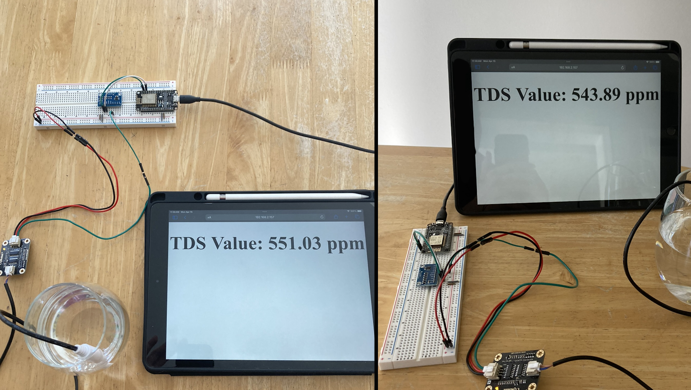

Webscrapping Discord Chat Bot

Status: Archived
Tools Used: JavaScript, Node.js, Discord.js, Puppeteer.js
During my transition into my undergraduate studies at Brock University I created a discord server for first-year incoming students. The discord server, which grew to have 3000+ students, utilized a discord chat bot that I created to provide tons of students essential news and information about Brock University. I developed a Discord bot using JavaScript with Discord.js (Node.js library). The bot used webscrapping techniques with Puppeteer.js if the data was not able to be received through GET requests. Some of the functionality included giving live arrival times in chat for Niagara region transit busses arriving at Brock University from and also directly notifying members about any Brock related news that has been posted on the Brock University website.
Note: This project is archived. This means all or parts of this project are no longer functional but some or all parts of it have been saved.